SIGMOD 2022 Optimal DP GPU Query Optimizer
如果沿着本仓库 join order 的学习线看，MPDP 的位置很清楚：
| 前置材料 | 已经解决的问题 | MPDP 接着问什么 |
|---|---|---|
| System R / DPSIZE / DPSUB | 用 bottom-up DP 在 subset lattice 上累积最优子计划，容易按子集大小并行。 | DPSUB 的枚举太“机械”：大量 subset split 最后不是合法 join，能不能先少生成无效候选？ |
| DPCCP / DPHyp | 用 join graph 只枚举 connected-subgraph complement pair，避免 cross product。 | DPCCP 依赖关系更强，难以吃满 GPU/多核；能不能保留图感知枚举，同时保持 subset DP 的批处理形态？ |
| IKKBZ / GOO / LinDP / Query Simplification | 面对几十到上千表时，用受限搜索、线性化或图约束做 graceful degradation。 | 如果精确 DP 子问题能更快，启发式是否可以用更大的局部窗口，得到更好的计划？ |
| How Good Are Query Optimizers | 提醒我们优化器质量不能只看生成计划的速度，真实计划质量和估计误差同样关键。 | MPDP 的实验主要看 optimization time 和 estimated cost，所以要分清它解决的是枚举瓶颈，不是 cardinality estimation。 |
| Heuristic Search 2023 | 把 join ordering 规约成 shortest path，用 Dijkstra/A* 按需探索。 | MPDP 仍站在 DP lattice 内部：它不改变问题表述，而是让 DP 枚举更适合并行硬件。 |
所以这篇论文最好的读法不是问“GPU 到底快了多少”，而是问：在不考虑 cross product 的 bushy join order 里，合法候选的最小枚举、依赖关系和现代硬件吞吐之间，怎样做工程上的折中。
按论文首页署名，作者来自 EPFL、Scuola Superiore Sant'Anna、University of Patras 和 RAW Labs SA。这里的背景信息用于理解论文风格：它是一篇系统实现型数据库论文，既有 join enumeration 的理论正确性证明，也有 PostgreSQL 12 和 GPU kernel 级实现细节。
| 作者 | 论文署名机构 | 在这篇论文中的角色信号 |
|---|---|---|
| Riccardo Mancini | Scuola Superiore Sant'Anna | 论文第一作者。论文实现与算法叙述都围绕 MPDP 枚举、GPU 化和 PostgreSQL 集成展开。 |
| Srinivas Karthik | EPFL | EPFL 数据系统团队成员。论文的优化器实现和实验评估明显带有 systems research 的工程取向。 |
| Bikash Chandra | EPFL | 共同作者。与 Karthik 一样属于 EPFL 侧的数据库系统研究背景。 |
| Vasilis Mageirakos | University of Patras，脚注说明工作完成于 EPFL | 论文明确标注其贡献发生在 EPFL 期间，说明项目主要在 EPFL 数据系统环境中形成。 |
| Anastasia Ailamaki | EPFL & RAW Labs SA | 数据库系统领域资深研究者。论文同时关注学术算法、开源数据库集成和实际硬件效率，和她长期的系统研究风格一致。 |
这个作者组合也解释了论文的写法：§3 有形式化证明，§5 写到 bitmapset、Murmur3 hash table、warp-level parallelism，§7 又落在 PostgreSQL、MusicBrainz、JOB 和 AWS 成本上。
论文开篇的场景是自动生成的大型分析 SQL：BI 报表、复杂数据湖查询、自动生成查询都可能把 FROM clause 拉到几十甚至上百张表。执行层近年有很多进步，例如数据布局、scale-out、JIT，但优化器里的 join order search 仍然会指数爆炸。
作者用两个现实数字制造压力：PostgreSQL 在一个 21-relation star join 上找最优计划约需 160 秒；SparkSQL 规划 18-relation 查询约需 1000 秒。于是系统通常设一个阈值，超过阈值就退到启发式，例如 PostgreSQL 使用 GEQO，论文里反复提到的默认精确优化边界是 12 个关系。
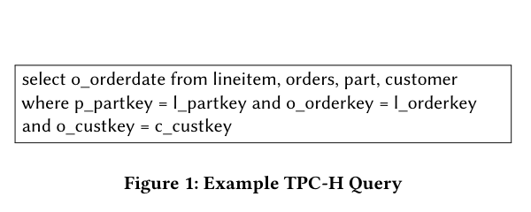
论文把优化器瓶颈拆成两个可度量方向：
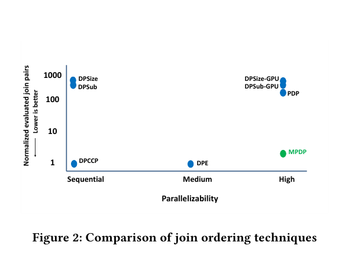
从 Figure 2 可以看到作者的核心叙事：DPSIZE/DPSUB 规整、好并行，但会评估远多于 CCP-Pair 的候选；DPCCP 只枚举合法 CCP-Pair，但枚举依赖使它不适合大规模并行；MPDP 要结合二者，在 MusicBrainz 20-relation 例子上只评估约 2 倍于 valid Join-Pair 的候选，同时仍保持高并行性。
贡献在原文里分为三层。第一层是精确算法 MPDP，理论上保证 optimal join order，并在 tree join graph 上证明不评估任何无效 Join-Pair。第二层是大查询启发式，把 MPDP 嵌进 IDP2，并提出新的 UnionDP。第三层是 PostgreSQL 12 + GPU 的系统实现和实验：在 MusicBrainz、JOB、synthetic star/snowflake/clique 上比较优化时间和启发式计划质量。
论文把 join query 表示成 \(G(R,E)\)：点是 FROM clause 里的 relation，边是 inner join predicate。对于两个 relation set \(S_{left}\) 和 \(S_{right}\)，它们能组成合法 Join-Pair，需要满足四个条件：
满足这些条件的 Join-Pair 就是 DPCCP 文献里的 Connected-subgraph Complement Pair，也就是 CCP-Pair。论文中的 CCP-Counter 计数包括左右对称的 pair，而且它只由 join graph topology 决定：同一条查询，不管 DPSIZE、DPSUB 还是 DPCCP，理论上的 CCP-Pair 总数相同。
如果一个 Join-Pair 的左边或右边本身来自另一个 Join-Pair 的结果，那么前者依赖后者。论文关注这一点，是因为 GPU/多核并行要批量评估候选；如果候选之间有复杂依赖，parallel scheduling 就会变得困难。
DPSUB 的优势是按 set size 从小到大推进：所有 size 为 \(i\) 的 connected set 可以同层处理，某个 \(S\) 内部的 subset split 也天然可并行，最终只需要对 BestPlan(S) 做一次 reduce/prune。它的问题是枚举太粗。
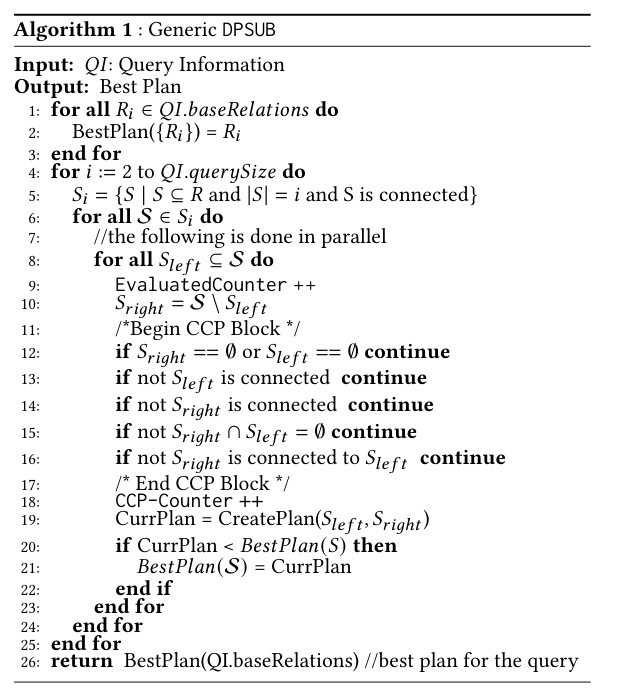
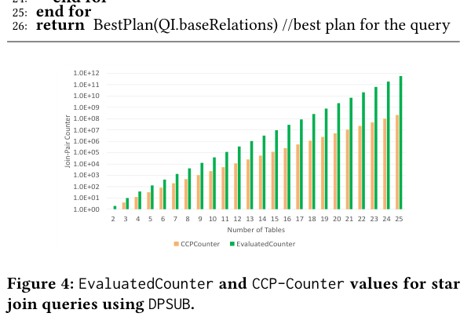
这一节实际上把 MPDP 的目标写清了：不要破坏 DPSUB 的层次并行结构，但要避免 DPSUB 在 powerset split 上做成千上万倍的无效检查。换成项目语境讲，若 demo 里只实现 “枚举所有 subset split + connected check”，可以很好展示 DP 正确性，却会严重低估实际 optimizer 中候选生成器的重要性。
§2.4 引入 cut vertex、nonseparable graph、biconnected component/block 和 block-cut tree。这里不是背景装饰，而是 §3.2 的核心。一般图里删一条边不一定把图切成两个连通块，所以 tree 上的删边枚举不能直接搬到 cyclic graph。MPDP 的答案是：在 block 里做有限的 vertex-based 枚举，再通过 cut structure 把局部切分扩展成整个 \(S\) 的 Join-Pair。
论文先讲 tree join graph，因为 star 和 snowflake 这类分析查询常见结构都属于 tree scenario。若 \(S\) 是 connected subset，而原 join graph 是树，那么 \(G[S]\) 也是树；一棵 \(i\) 个点的树有 \(i-1\) 条边，删掉任意一条边都会得到两个非空连通分量，并且两边之间原来正好有那条 join edge。
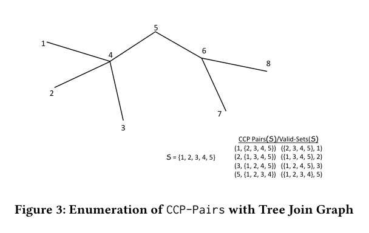
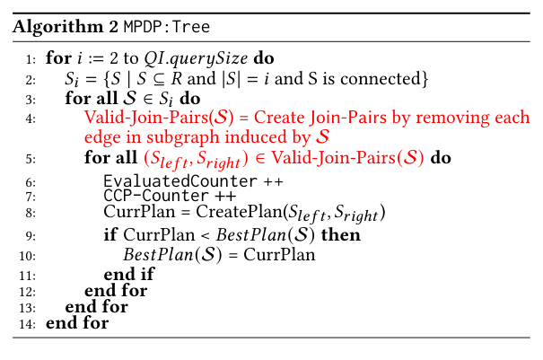
这就是 Algorithm 2 的全部直觉：对每个 connected set \(S\)，直接由“删边”生成 \(i-1\) 个 Join-Pair。由于每个 pair 天然满足 CCP-Pair 四条件，算法不需要再走 DPSUB 的 CCP block 检查。于是 EvaluatedCounter == CCP-Counter，达到 lower bound。
正确性证明也非常短：
和原文编号对照：Lemma 1 说明 Algorithm 2 生成的任何 Join-Pair 都是 CCP-Pair；Lemma 2 说明 DPSUB 和 MPDP:Tree 会枚举到同一组 CCP-Pair；因此 Theorem 3 得到结论：MPDP:Tree 能找到 optimal join order，并且只评估 CCP-Pair。
这里有一个容易忽略的工程点：MPDP:Tree 仍保留 DPSUB 的 outer loop，也就是按 subset size 处理 \(S_i\)。它不是像 DPCCP 那样在全图级别按边依赖展开，而是在每个 connected subset 内部做 edge-based generation。这样，枚举单元仍然适合并行。
在 tree join graph 里，任意一条边都是唯一通路。删掉它，图一定断成左右两个连通部分，所以 Algorithm 2 可以直接用“删边”生成 Join-Pair。
一般图里有 cycle 时就不行。假设有一个四边形：
1 --- 4
| |
2 --- 3删掉边 \((1,4)\) 以后，1 仍然可以沿着 \(1 \rightarrow 2 \rightarrow 3 \rightarrow 4\) 到达 4。也就是说，删边没有产生左右两块。Figure 5 里的 \((1,4)\) 就是这个问题的原文例子。
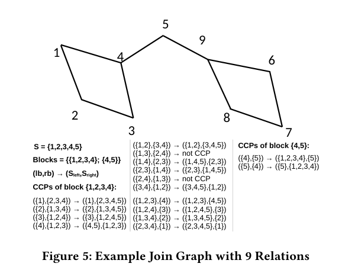
| 术语 | 先用这个直觉理解 | 在 MPDP 里做什么 |
|---|---|---|
| cut vertex | 删掉它以后，图会被切成更多块的“关节点”。 | 告诉我们哪些 relation 是多个结构块之间的连接点。 |
| block | 内部比较结实的一块；不能再靠删一个点轻易拆开。 | MPDP 不在整个 \(S\) 上枚举 subset，而是在每个 block 内枚举局部左右种子。 |
| block-cut tree | 把复杂图压成“block - cut vertex - block”的树状骨架。 | 帮助理解为什么局部切分可以沿着关节点扩展到全局切分。 |
以 Figure 5 中论文直接给出的例子为准：
S = {1, 2, 3, 4, 5}
Blocks inside S = {{1, 2, 3, 4}, {4, 5}}这里 `{1,2,3,4}` 是一个有环的 block，`{4,5}` 是一条连接出去的 bridge block。MPDP 的第一步就是：不要枚举 \(S\) 的所有 subset，先只在这些 block 内枚举。
Algorithm 3 里最难读的函数是 grow(lb, S \ rb)。可以把它翻译成一句话：
lb 出发，只允许在 S \ rb 里走；所有能走到的点，都归到全局左边 \(S_{left}\)。
也就是说，rb 是禁区。grow 不是随便扩展，而是在“不能进入右种子”的限制下做 reachability。
| block 内局部切分 | grow 怎么走 | 得到的全局 Join-Pair |
|---|---|---|
| \(lb=\{1\}\), \(rb=\{2,3,4\}\) | \(S \setminus rb = \{1,5\}\)。从 1 出发，不能经过 2/3/4，因此到不了 5。 | \((\{1\}, \{2,3,4,5\})\) |
| \(lb=\{4\}\), \(rb=\{1,2,3\}\) | \(S \setminus rb = \{4,5\}\)。从 4 出发，可以走到 5。 | \((\{4,5\}, \{1,2,3\})\) |
| 在 block \(\{4,5\}\) 里取 \(lb=\{4\}\), \(rb=\{5\}\) | \(S \setminus rb = \{1,2,3,4\}\)。从 4 出发，会把 1/2/3 也吸到左边。 | \((\{1,2,3,4\}, \{5\})\) |
这三个例子就是 Figure 5 里 \((lb, rb) \rightarrow (S_{left}, S_{right})\) 的核心。block 只决定“切口在哪里”，grow 负责把切口外面挂着的 relation 自动归到对应一侧。
有了上面的直觉，Algorithm 3 可以按四步读：
CreatePlan 并更新 BestPlan(S)。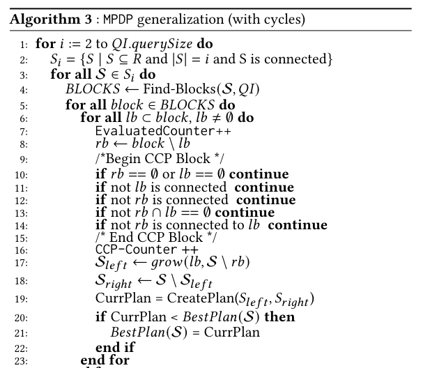
这就是论文说的 hybrid enumeration：在 block 内有点像 vertex-based enumeration，但不是对整个 \(S\) 做；在 block 之间又利用 cut structure，有点像 edge/tree-aware enumeration。它的目的不是改变 DP 的状态，而是让每个状态 \(S\) 的候选 Join-Pair 更少、更接近真正的 CCP-Pair。
证明可以先记成两句话：
和原文编号对照：Lemma 4 证明 DPSUB 枚举到的每个 CCP-Pair 都会被 MPDP 枚举到；Lemma 5 证明由 block 内 \((lb, rb)\) 构造出的全局 \((S_{left}, S_{right})\) 确实是 CCP-Pair；由此得到 Theorem 6，即一般图 MPDP 仍找到 optimal join order。随后 Lemma 7 比较 MPDP 与 DPSUB 的 subset 评估数量，给出 \(O(B \cdot 2^b)\) 相对 \(O(2^{|S|})\) 的分析；Lemma 8 说明同一个 connected set \(S\) 上的 CCP-Pair 不会被重复枚举。
复杂度分析里最重要的是：DPSUB 对 set \(S\) 看 \(2^{|S|}\) 级别的 subset；MPDP 只在 block 内做指数枚举，复杂度可以写成 \(O(B \cdot 2^b)\)，其中 \(B\) 是 block 数，\(b\) 是最大 block size。在 Figure 5 的例子中，原文说从 512 个候选降到 32 个。也就是说，MPDP 的收益来自 join graph 可分解性；如果 join graph 是大 clique，block size 接近整个 \(S\)，剪枝空间就小得多。
§4 的开头承认一个事实：MPDP 再快，精确 join order optimization 仍然指数增长。对于数百或上千表查询，系统还是需要启发式。论文没有把 MPDP 当成“替代启发式”的魔法，而是把它当成更强的局部精确求解器。
IDP2 的流程是：先由某个启发式生成初始 join tree，然后反复选出最昂贵的、大小不超过 \(k\) 的子树，用精确 DP 重新优化这部分，把优化后的子树临时压成一个 relation，继续迭代。MPDP 的作用是替换 IDP2 内部的精确 DP 子过程。
这样做的意义不是改变 IDP2 的策略，而是在相同时间预算下允许更大的 \(k\)。原文脚注给出一个很有用的量级：在 snowflake schema 上，GPU MPDP 可以把 \(k\) 提到 25，并且 100 表优化时间约 550ms。\(k\) 越大，IDP2 每次局部重优化看到的 plan space 越大，计划质量通常越好。
IDP2 的弱点是依赖初始计划，可能被局部最优拖住。UnionDP 则直接利用 join graph topology：把图切成 MPDP 可处理的小 partition，对每个 partition 做精确 MPDP，再把每个 partition 压成 composite node，递归优化新的图。
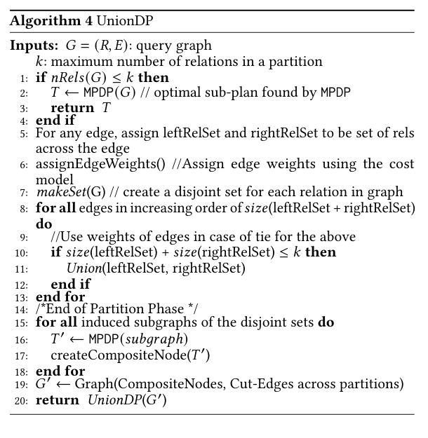
UnionDP 的 partition 目标有两个，且天然冲突：
这和 Query Simplification 的思想有亲缘关系，但不完全一样。Query Simplification 是逐步向优化问题添加顺序约束，让剩余空间小到 DP 可处理；UnionDP 是先把 graph 分区，对区内精确求解，再递归地把区作为 composite relation 继续求解。前者是在原问题上加约束，后者更像构造一个层次化的分治问题。
§5 是这篇论文非常“系统”的部分。作者没有只说“MPDP 可以并行，所以放到 GPU 上”，而是给出一条 GPU pipeline，并说明 memo table、bitmapset、stream compaction、warp scheduling 和 branch divergence 如何影响实际性能。
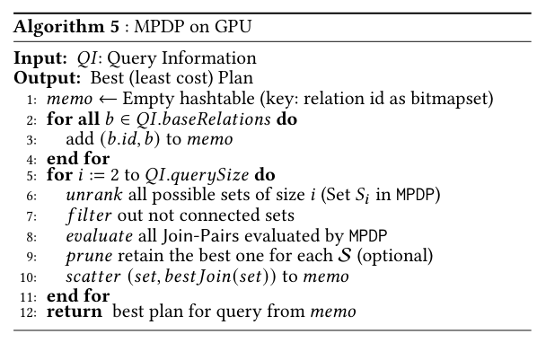
实现细节可以按数据结构和 pipeline 两层理解：
| 环节 | 原文实现 | 为什么重要 |
|---|---|---|
| relation set 表示 | 固定宽度 bitmapset，adjacency list 也用 bitmapset。 | 集合包含、交、差、可达性等操作可以变成紧凑位运算，适合 GPU 批处理。 |
| memo table | key 是 relation bitmapset，使用 Murmur3 的 open-addressing hash table。 | DP 每层都要读写 BestPlan(S)，memo table 的布局会直接影响随机访问成本。 |
| unrank | 用 combinatorial schema 生成 size 为 \(i\) 的 relation set。 | 避免串行构造所有组合，把“第几个组合”直接映射成 bitmapset。 |
| filter | 过滤不连通 set，可用类似 thrust::remove 的 stream compaction。 |
后续 evaluate 只处理 connected set，减少无意义 work item。 |
| evaluate | warp-level parallelism，一个 warp 处理一个 set，内部并行 Find-Blocks 和 Join-Pair 检查。 | 让 Algorithm 3 的 block 枚举落到 GPU 线程协作模型上。 |
| prune/scatter | 每个 \(S\) 只保留最优 Join-Pair，然后写回 memo。 | 减少全局内存写入，是 MPDP 相对已有 GPU-DP 实现的工程优化点之一。 |
论文还特别提到两个 enhancement。第一是减少 global memory writes：不把所有候选计划写到全局内存后再单独 prune，而是在 evaluate 末尾利用 shared memory/warp reduction 只写最佳结果。第二是避免 if branch divergence：无效 Join-Pair 会导致 warp 内线程分歧，作者借鉴 Collaborative Context Collection，把暂时无法一起执行的 work stash 到 shared memory，等凑够 warp 粒度再执行。
§6 把相关工作分成 optimal algorithms 和 heuristic solutions。这里适合把 MPDP 放回本仓库已有笔记的坐标系里：
| 路线 | 代表 | MPDP 的关系 |
|---|---|---|
| 传统 optimal DP | DPSIZE、DPSUB、PostgreSQL/DB2 一类系统实现 | 保留 bottom-up DP 和按 size 分层的并行优势，但替换候选生成器。 |
| graph-aware DP | DPCCP、DPHyp | 吸收 CCP-Pair 思想，目标是避免 cross product 和 disconnected split；但不采用难并行的全图依赖枚举。 |
| 并行 DP | PDP、DPE、shared-nothing decomposition、GPU DPSIZE/DPSUB | MPDP 认为并行本身不够，若底层枚举仍包含大量 invalid Join-Pair，就会在大查询上被无效工作拖住。 |
| 受限搜索启发式 | IKKBZ、GOO、min-sel、LinDP、IDP | MPDP 本身不限制搜索空间；但作为 IDP2/UnionDP 子过程，可以让启发式局部窗口更大。 |
| 随机/学习方法 | Simulated Annealing、Genetic Algorithms、Bao 等 | 论文把这些放在启发式背景中，主要批评点是大 join 场景的 plan quality 或 scale 仍不稳定。 |
这也解释了为什么 MPDP 和 2023 年 Heuristic Search 那篇论文虽然都面向 join order，但精神不一样：Heuristic Search 重新表述搜索问题，MPDP 则在 DP 家族内部做枚举器和硬件适配。
实验机器是双路 Intel Xeon E5-2650L v3，每颗 12 核/24 线程，755GB RAM；GPU 是 Nvidia GTX 1080。所有 join order 技术都实现到 PostgreSQL 12 optimizer 中。§7.5 的成本实验换到 AWS instance 上做。
cost model 是论文自实现的 PostgreSQL-like model，作者说在实验 query 上和 PostgreSQL cost 最坏相差 5% 以内。这里要注意：他们没有复刻 PostgreSQL 完整 cost model，因为完整模型还覆盖 outer join、inequality join、并行度等，迁移到 GPU 需要重写大量代码。也就是说，实验很适合比较 join enumeration/optimization time，但不能等同于“完整 PostgreSQL optimizer 行为完全复现”。
optimal algorithm evaluation 的 baseline 包括 PostgreSQL DPSIZE、DPCCP、DPE、GPU DPSub、GPU DPSize、MPDP CPU、MPDP GPU。因为这些都是 exact algorithm，实验只比较 optimization time，不比较 plan quality。
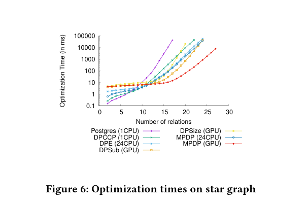
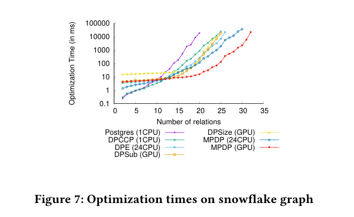
star 和 snowflake 是 MPDP 最强的舞台，因为这些图结构接近 tree。原文在 star 25 relations 处给出几个很直观的倍率：MPDP GPU 比 MPDP 24CPU 快 17x；比 DPSub GPU 快 20x，因为它评估的 Join-Pair 少 2805 倍；比 DPSize GPU 的无效/重叠 pair 少更多。
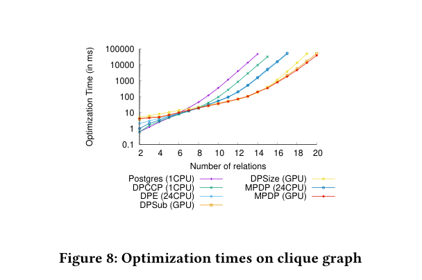
clique 结果是一个重要边界：当 join graph 完全连接时，所有 partition 都高度耦合，MPDP 的 “少枚举 invalid Join-Pair” 优势会下降。它仍然跑得快，主要来自 GPU 并行和避免 DPSIZE 的 overlapping pair，而不是来自 block 分解。
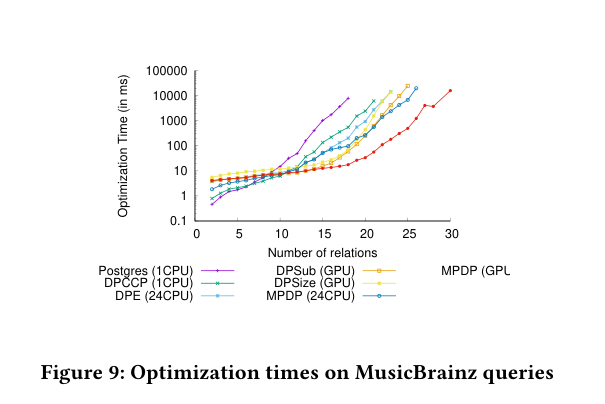
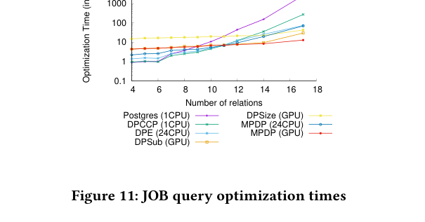
MusicBrainz 实验用 56 表数据库生成随机 walk 查询，主要选 primary-key/foreign-key join。论文报告 26 表时 MPDP GPU 比 MPDP CPU 24 threads 快 14x，比 DPSub GPU 快 19x；23 表时比 DPE 24CPU 快 80x。JOB 的 join 数较小，且更偏 cardinality estimation 压力测试，所以它更多说明 MPDP 在真实 benchmark 上不会只在合成图里有效。
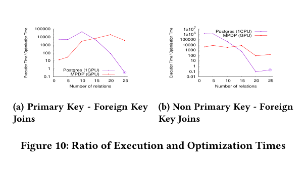
Figure 10 很适合和 “How Good Are Query Optimizers” 互相提醒。MPDP 节省的是 optimization time；但执行时间还依赖数据量、谓词、执行环境和估计精度。论文没有把所有变量都解决，而是证明在大 join 场景里，planning 本身已经足够昂贵，降低它有实际意义。
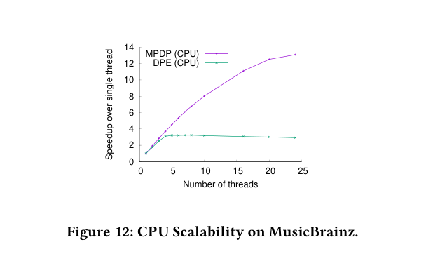
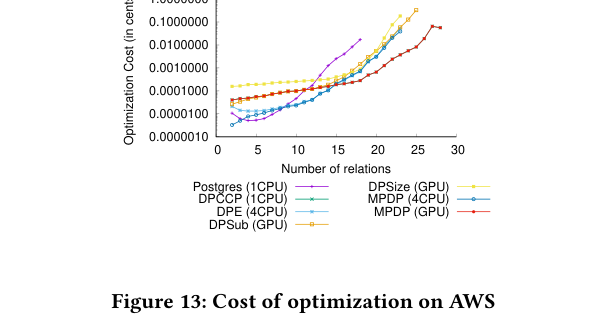
§7.2.5 还报告两个 GPU enhancement 的效果：kernel fusion 减少 global memory writes，最多约带来 40% 改善；Collaborative Context Collection 的收益依赖图结构，MPDP 上最高约 3x。这里再一次说明，论文不是只做理论枚举，也确实关心 GPU 上每个 warp 的实际行为。
启发式实验不比较真实执行时间，而比较 PostgreSQL-like cost model 给出的 plan cost。每个 query size 生成 100 条查询，把所有算法找到的最便宜计划归一化为 1，再报告平均相对 cost 和 95th percentile。这个设计很重要：它衡量的是 plan quality under estimated cost，不是 runtime。
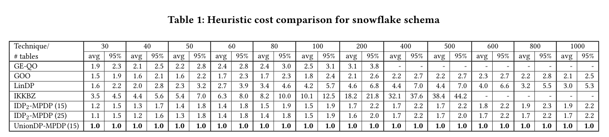
snowflake 上 UnionDP-MPDP 表现最好，因为它很容易沿昂贵边切出合理 partition。IDP2-MPDP(25) 通常第二好。GEQO 在 200 表后 timeout；GOO 平均比 UnionDP 贵 1.5–2.3 倍；IKKBZ 因只看 left-deep，在 500 表时平均相对 cost 到 38.4；LinDP 平均 1.6–4.6 倍，95 分位可到 7 倍。
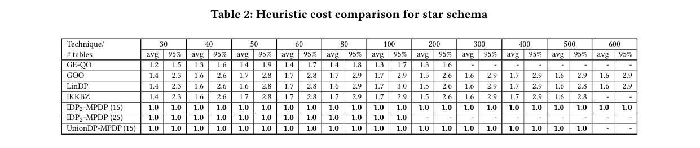
star 上 IKKBZ 没有 snowflake 那么糟，因为 star 的最优 join order 很多时候落在 left-deep search space 内。但 MPDP 系列仍然稳定。论文也提到 clique 上 UnionDP 不占优：边太多会让 partition balancing 和 cut-edge maximization 互相冲突，IDP2-MPDP 反而表现更好。这个失败模式很重要，它说明 UnionDP 是 topology-conscious heuristic，不是普适最优启发式。
| 维度 | 论文给出的强证据 | 读者需要保留的边界 |
|---|---|---|
| 算法正确性 | Tree 和 general graph 都证明 MPDP 枚举到与 DPSUB 相同的 CCP-Pair，并能得到 optimal join order。 | 前提是不考虑 cross product，且问题建模为 inner join graph；DPHyp 那类 hypergraph/outer join 支持是未来工作。 |
| 枚举效率 | Figure 2/4 和 §3 分析说明 MPDP 显著减少 invalid Join-Pair，tree 上达到 CCP-Counter lower bound。 | clique 或大 block 图上，block 枚举优势会变小，性能更多依赖并行硬件。 |
| 系统实现 | PostgreSQL 12 中实现所有 baseline，并给出 GPU pipeline、memo table、branch divergence 优化。 | GPU 集成需要重写/适配大量 optimizer 内部结构；论文 cost model 接近 PostgreSQL，但不是完整 PostgreSQL cost model。 |
| 实验结论 | MPDP GPU 在 star、snowflake、MusicBrainz、JOB 的大 join 上显著降低 optimization time。 | 小查询上 GPU 传输成本会抵消收益；JOB join 数有限，主要不能证明超大查询上的真实执行收益。 |
| 启发式质量 | IDP2-MPDP 和 UnionDP-MPDP 在 1000 表级别的 synthetic schema 上能找到更低 estimated cost 的计划。 | 实验比较 estimated cost，不比较真实执行时间；cardinality/cost estimation error 不在本文解决范围内。 |
我的整体 review 是：MPDP 的价值不在于宣称“GPU 可以解决 join ordering”，而在于它把 DP 枚举器改造成了适合 GPU 的形状。它把候选生成、图分解和硬件 pipeline 一起设计，这一点比单独的 GPU kernel 更值得学。
对本项目后续实现或 demo 扩展，最值得落地的观察有三条：
EvaluatedCounter 和 CCP-Counter 暴露出来。只展示最终 plan，不足以说明枚举器差异。这一节用于复查本文是否覆盖原文的关键证据。若后续要把学习笔记拆成讲义或 demo README，也可以从这里抽引用。
| 原文对象 | 本文位置 | 为什么重要 |
|---|---|---|
| Figure 1 / TPC-H Query | §2 | 用一个小查询说明 Join-Pair 需要由 join predicate 支撑，不是任意两边都可 join。 |
| Figure 2 / 技术定位图 | §2 | 全文 thesis map：少枚举与高并行是两个同时追求的目标。 |
| Algorithm 1 / Generic DPSUB | §3 | MPDP 的对照基线，显示 invalid Join-Pair 是在哪里产生和被过滤的。 |
| Figure 3 / Tree CCP 枚举 | §4 | 解释 tree 场景为什么可以用删边替代 powerset split。 |
| Figure 4 / DPSUB evaluated vs CCP | §3 | 量化 DPSUB 在 star join graph 上的无效候选膨胀。 |
| Algorithm 2 / MPDP:Tree | §4 | tree 场景精确算法，达到 EvaluatedCounter == CCP-Counter。 |
| Figure 5 / block + grow 示例 | §5 | 一般图 MPDP 的关键图，展示 block 内 CCP 如何映射回全局 CCP。 |
| Algorithm 3 / General MPDP | §5 | 用 Find-Blocks、block-local subset enumeration 和 grow 处理 cyclic graph。 |
| Algorithm 4 / UnionDP | §6 | 把 MPDP 用作超大查询启发式的局部精确求解器。 |
| Algorithm 5 / GPU MPDP | §7 | 说明 GPU 版不是单函数加速，而是一条 unrank/filter/evaluate/prune/scatter 流水线。 |
| Figure 6/7/8/9/11 | §9 | 精确算法优化时间实验，覆盖 star、snowflake、clique、MusicBrainz、JOB。 |
| Figure 10/12/13 | §9 | 补充说明 optimization time 相对执行时间、CPU scalability 和 AWS 成本。 |
| Table 1/2 | §9 | 启发式 plan quality 的主要证据，展示 IDP2-MPDP 与 UnionDP-MPDP 的 estimated cost 优势。 |
| 问题 | MPDP 的回答 | 对应原文证据 |
|---|---|---|
| 为什么 DPSUB 慢？ | 它并行性好，但枚举 powerset split，绝大多数不是 CCP-Pair。 | §2.2–§2.3，Figure 4 |
| 为什么不直接用 DPCCP？ | DPCCP 少枚举，但全图级别的依赖枚举不容易大规模并行。 | §1，Figure 2，§6 |
| MPDP 的 trick 是什么？ | 在每个 connected subset 内做图感知枚举：tree 上删边，general graph 上 block 内枚举再 grow。 | Algorithm 2、Figure 5、Algorithm 3 |
| 为什么它仍是 optimal？ | 论文证明它枚举到与 DPSUB 相同的 CCP-Pair 集合，只是少生成无效候选。 | Theorem 3、Theorem 6 |
| GPU 在哪里发挥作用？ | 按 size 分层的 DP lattice、bitmapset、warp-level evaluation 和 compact/prune/scatter 让 work item 可批量执行。 | §5，Algorithm 5 |
| 超大查询怎么办？ | 用 MPDP 作为 IDP2 或 UnionDP 的局部精确求解器，扩大启发式能探索的窗口。 | §4，Table 1–2 |
素材说明：本文基于本仓库论文 PDF 逐节阅读整理，原文图表截图保存在 joinOrder/docs/assets/mpdp-sigmod2022/。正文为中文改写与 review，不是原论文逐句翻译。